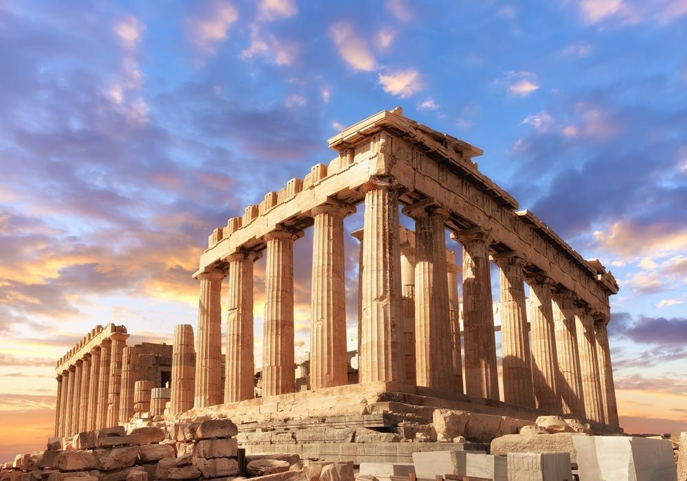

อารยธรรมกรีก

อารยธรรมกรีกเป็นอารยธรรมสำคัญของโลกตะวันตก เกิดขึ้นบริเวณคาบสมุทรบอลข่านและหมู่เกาะในทะเลอีเจียน ชาวกรีกมีความโดดเด่นด้านปรัชญา ศิลปะ วิทยาศาสตร์ และการเมือง โดยเฉพาะแนวคิดเรื่องประชาธิปไตยของนครรัฐเอเธนส์ ซึ่งมีอิทธิพลต่อการพัฒนาสังคมและการเมืองในเวลาต่อมา